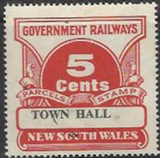
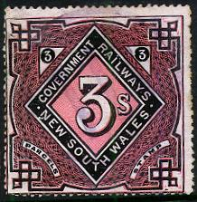
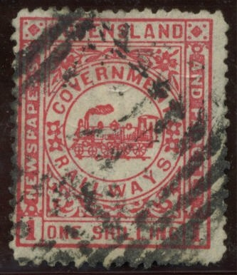
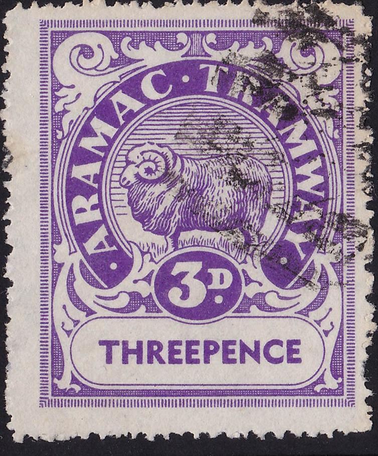
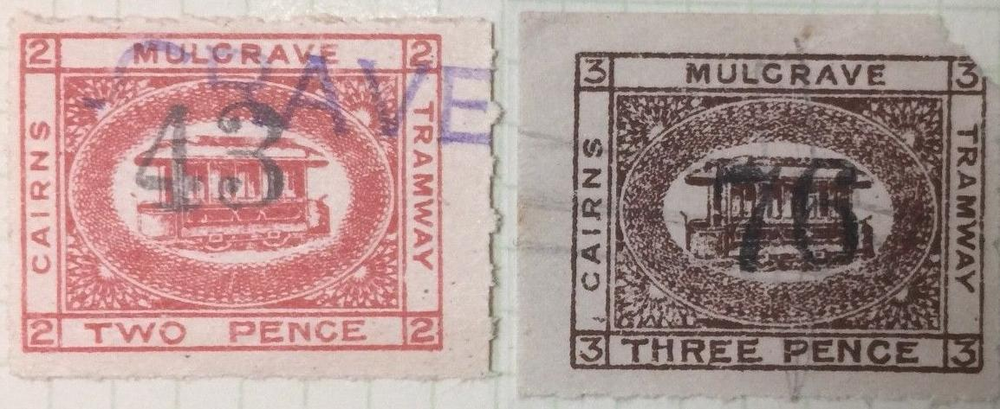
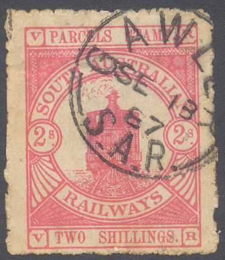
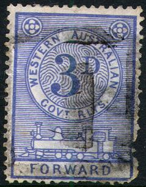
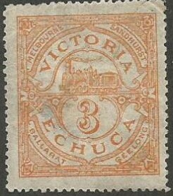
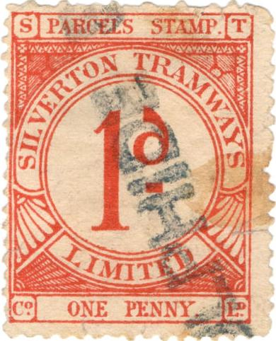
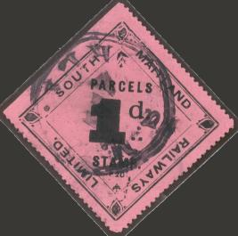

Note: on my website many of the
pictures can not be seen! They are of course present in the
catalogue;
contact me if you want to purchase it.
I'll show some of the railway stamps of Australia that I have seen, it is by no means complete. Does anybody have more information about these stamps? Then please contact me! The book 'Local Stamps of Australia' by Bill Hornadge also has valuable information.

A city name seems to be printed in the lower part
of the stamp. I have seen the values: 1 p blue, 3 p violet, 4 p
green, 5 p blue, 6 p red, 9 p lilac, 1 Sh brown, 2 Sh red, 3 Sh
green, 4 Sh black, 5 Sh yellow and 10 Sh grey.
Also 5 c red, 20 c red, 50 c orange, 70 c violet, 1 $ green, 2 $
lilac and 5 $ brown.
I have also seen the above stamps with "STATE
GOVERNMENT" in the lower part and "O S" overprint
(as such I have seen: 1 p blue, 3 p violet, 4 p green, 6 p red
and 1 Sh brown). Other similar stamps with "STATE
GOVT." instead of the city name and overprinted "O
S" in the values 3 p violet, 1 c blue, 2 c violet, 8 c
violet, 10 c brown, 20 c red, 40 c black, 50 c orange, 1 $ green
also exist. Other values might exist.

I have seen a 1 p blue in the same design.
Furhermore I have seen the 1 p and 6 p with "OS" (On Service) overprint:
With "OS" overprint
"NEW SOUTH WALES GOVERMENT TRAMWAYS PACKET STAMP" 6 p
(in red) on 4 p blue, issued in 1937.
(10 Sh green, extremely rare stamp and 1/2 p blue)
Inscription "QUEENSLAND GOVERNMENT RAILWAYS NEWSPAPERS AND PARCELS"

(Queensland Government Railways, Newspapers and Parcels)
I've seen the values: 1 p blue, 3 p violet, 6 p green and 1 Sh red (all slightly different designs).
(reduced sizes)
1 p red 3 p brown 6 p green 1 Sh lilac (Other values might exist)
(Reduced sizes)
3 p lilac and red 6 p green and red 1 Sh red an blue (other values might exist)
Other values probably exist. I have seen the values (all with a townname in red at the bottom): 1 c blue, 2 c lilac, 3 c brown, 5 c green, 6 c orange, 7 c lilac, 10 c red, 20 c blue, 20 c green and red, 25 c grey, 25 c orange and blue, 50 c brown, 50 c brown and green, 1$ black, 2 $ lilac The above 10 Sh grey and red .
The Beaudesert Tramway issued parcel stamps on their line from Shire to Tabooba Juction and on the sidelines to Rathdowney and Lamington in 1906. The line was closed in 1944. The following values were issued: 1 p green, 3 p blue, 4 p red, 6 p brown and 1 Sh orange. The cancel consists of a set of lines with the number "1" to "4" in the center (corresponding to the four towns). Source: the book 'Local Stamps of Australia' by Bill Hornadge.
Queensland Beaudesert Tramway
In a similar design were issued the Aramac Tramway stamps in Queensland, with the image of a sheep. They were issued in 1944 and withdrawn in 1951. They were only valid on parcels carried from Barcaldine to Aramac (not the other way around). The values 1 p blue, 3 p violet, 5 p brown, 6 p green and 1 Sh red exist. Source: the book 'Local Stamps of Australia' by Bill Hornadge.

"ARAMAC TRAMWAY"
The book 'Local Stamps of Australia' by Bill Hornadge also mentions some Buderim Tramway stamps, supposedly issued from 1921 to 1934, but he did not manage to get an image of these stamps. I suppose they are the stamps shown below (although on the sheetlet where these stamps were pasted the text '1882-1903' was written):
"MAROOCHY SHIRE COUNCIL BUDERIM TRAMWAY".
I've seen a similar stamp with "MAROOCHY SHIRE COUNCIL MAPLETON TRAMWAY" in the values 3 p red and 6 p green.
Proof of the "MAPLETON TRAMWAY" stamps in the same
design as the Buderim Tramway stamps.
The Cairns-Mulgrave Tramway issued some stamps. It is not clear when exactly they were issued: see the book 'Local Stamps of Australia' by Bill Hornadge. Hornadge says the 2 p red and the 6 p yellow-green should have the size 22 mm x 17 mm and the 1 p blue, 3 p brown and 6 p blue-green should have the size 44 mm x 34 mm. However, the first 4 stamps shown below all have the same size. The 1 Sh value is not mentioned by Hornadge.

"CAIRNS MULGRAVE TRAMWAY", note the black (security?)
number and the violet cancels, supposedly issued around 1897.
The larger sized stamps of, issued around 1911?
The first railway stamp in South Australia were issued in 1885.

With "V R" inscription
With "G R" inscriptoin
I have seen the values: 1/2 p green (smaller
size), 1 p green, 2 p orange, 3 p black, 4 p violet, 6 p blue, 9
p lilac, 1 Sh brown and 2 Sh red. All with "V R" at the
bottom and top.
I have also seen 1/2 p green, 1 p green and 2 p orange with
"G R" at the bottom and top.
In the above design I have seen: 1 p, 2 p, 3 p, 4 p, 5 p, 6 p, 7 p, 8 p, 11 p, 1 Sh and 2 Sh (all in the colour red).
I have also seen some stamp similar to the above ones, with inscription "S.A.RAILWAYS PARCEL" with the value in cents. I have seen the following values: 1 c, 2 c, 4 c, 5 c, 7 c, 8 c, 20 c, 30 c, 40 c, 50 c, 60 c and $1.
10 Sh orange
I've also seen a 1 p black, 3 p blue, 4 p green,
6 p light brown, 8 p brown, 9 p red, 1 Sh blue, 1/3 Sh lilac, 1/6
Sh green, 1/9 Sh violet, 2 Sh brown, 4 Sh light blue, 10 Sh
brown, and 1 Pound red in the above design.
Also the surcharged values '3' on 4 p green, '5' on 9 p brown,
'6/-' on 1/9 Sh violet and '8/-' on 1/3 Sh lilac.

This stamp was issued somewhere around 1905; I have seen the following values 1/2 p orange, 3 p blue (at least 2 types, see images above), 6 p blue, 9 p green, 1 Sh yellow, 1 Sh 3 p brown, 2 Sh brown, 2 Sh 6 p lilac and 2 Sh 6 p violet.
Railway parcel stamp issued around 1915 in the values 1/4 p green
and 1 p red. Other designs exist, see the book 'Local Stamps of
Australia' by Bill Hornadge. There also exists another Midland
Railway in Great Britain (with one of the designs erroneously
shown in Hornadge); see: Great Britain
Railway stamps / parcel delivery stamps. An image of the
third issue can be found at:
http://www.ozrevenues.com/Revenue-Railway-Local-Perfin-Catalogue/tramways.htm
This 'Type 4' listed in Hornadge is actually a parcel stamp from
Great Britain instead.
"WESTERN AUSTRALIAN GOVT. RAILWAYS PARCELS STAMP
PERTH": 9 p green and red.

I've seen similar stamps issued in 1879.
(I've also a 2 p blue in the same design)
Besides the 3 p green shown above, I have also seen the following values: 1 p violet, 2 p green, 6 p red, 7 p brown, 8 p red on yellow, 9 p red, 10 p green, 11 p red on yellow, 3 Sh lilac and 5 Sh blue. I've also seen a red '10d' overprint on a 10 p green stamp. It seems that the townnames, such as "DANDENONG", "MELBOURNE" or "SOUTH BRUNSWICK" are printed in the lower part of the stamp in black.
In this design I have seen the following values: 1/2 p black on violet, 1 p black on grey, 2 p blue, 3 p black on blue, 3 p red on blue, 5 p red, 6 p black on lilac, 8 p black on red, 9 p black on lilac, 10 p black on grey, 1 Sh black on yellow, 1 Sh red on yellow and 2 Sh black.

1 p red perforated, 1 1/2 p green rouletted, 3 p brown, 1 p red
("CO. LTD."), 6 p blue ("CO.LTD."),
provisional 1 c by manually surcharging "1/2 c" by a
large "C" and 1 c red.
The Silverton Tramways were established in 1886.
They seem to have issued stamps even after 1966. The book 'Local
Stamps of Australia' by Bill Hornadge lists these stamps and
their history. The design is similar to the 1885 South Australia
railway stamps, but with the train replaced by a value.
The original four values were perforated in the values 1 p red, 1
1/2 p green, 3 p brown and 6 p blue.
Later on they were rouletted.
In 1935 the design was slightly changed and "CO LTD"
was put instead of "LIMITED" in the lower part of the
stamp; in the values 1 p red, 6 p blue. When the currency was
changed some provisional handsurcharged stamps with a large
"C" exists on the 1 1/2 p stamps to convert them to 1 c
stamps. A 1 c red was also issued afterwards.

This company also issued stamps in 1920 with 'Pty' printed before the word 'LIMITED' (see next picture). I have seen the values 1 p black on yellow, 4 p black on violet and 6 p black on red. The values black on white, 3 p black on lilac, 4 p black on white, 6 p black on orange, 9 p black on yellow and 1 Sh black on white also exists according to the book 'Local Stamps of Australia' by Bill Hornadge.
Here a 6 p stamp with "Pty" added in front of
"LIMITED". All cancelled stamps I have seen were
obliterated with a smudgy circular cancel.
In 1959 a 9 p black and 1 Sh black were issued in a modified design (lettering different and corner ornaments different).
There are two catalogs concerning the railway stamps of Australia written by Craig & Ingles; one for Tasmania and the other for the balance of the States. An even better catalog is the one by Dave Elsmore for Queensland (information obtained thanks to Bill Weinberger). I haven't seen these books myself. The book 'Local Stamps of Australia' by Bill Hornadge also has valuable information.
{kind=link}
{kind=link}
{kind=link}
{kind=link}
{kind=link}
{kind=link}